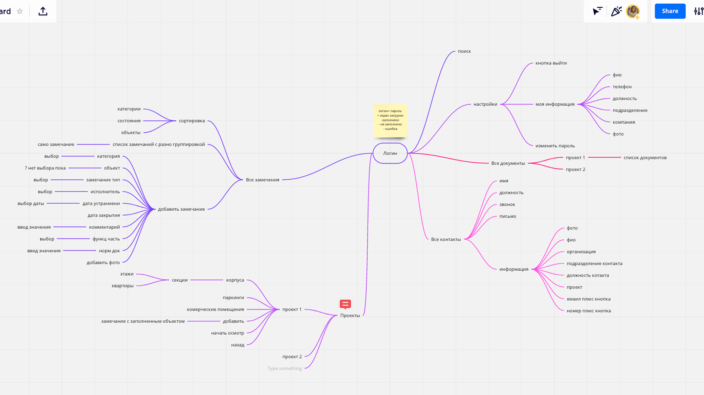
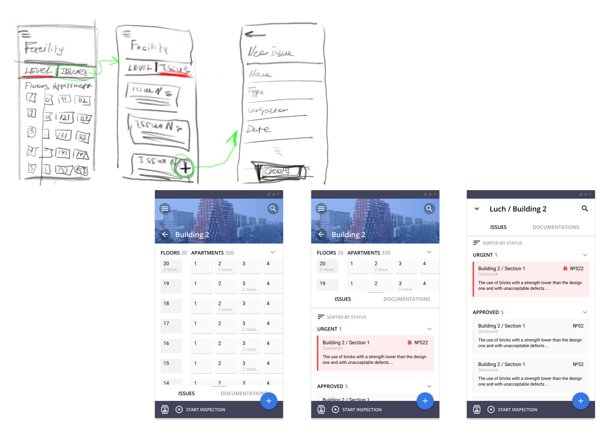

This project was completed during my time as a contractor at an agency. The client was a major real estate developer in Russia. The goal was to create an app that would replace traditional paper forms and notes on construction sites. The existing process involved extensive paperwork: controllers would manually inspect the site, record findings on paper, and later transfer the data into the system from the office. This workflow was time-consuming and prone to errors, which the app aimed to address.
Goal
Help controller to make all checks and notes straight to the system.
Remove a paperwork from this process.
Team
UX/UI designer
Buisness Analitics
Project Manager
Product Manager
Mobile Developer
My role
As a solo UX/UI designer collaborating with Business Analytics, we conducted a thorough review of the current processes and documentation. Based on these insights, I designed the core structure and essential functionality of the app.
Research
We interviewed client and few controllers who was working the company. Our goal was to understand what the current process. What information collected and how.
Findings
From the initial concepts, we determined that the solution would be a mobile or tablet app. During the interviews, we discovered that all controllers were provided with Android phones by the company for taking photos. Based on this insight, we decided to begin development with an Android version of the app.

Challenges
The main purpose of the app is to record issues identified on the construction site. This is centered around two key artifacts: the issue itself and the facility where the issue occurred.
This added complexity, as the number of levels in a construction site could vary. However, the app needed to provide flexibility by allowing users to view issues across all levels or focus on specific issues at an individual level.
Functionality
To ensure the MVP was functional, we defined and streamlined the core functionality.
Viewing Construction Sites and Levels: Users can view existing construction sites and their levels, with all data synced from the CRM. No ability to add new sites or levels within the app.
Adding, Editing, and Viewing Issues: Users can create, update, and review issues directly in the app.
Analitics: Insights into issues and site performance.
Issue Statuses: Tracking the progress of each issue through defined statuses.
Notifications: Alerts for updates or changes related to issues.
Designing Intuitive Navigation for Nested Structures
To address the challenge of creating an intuitive and accessible interface for navigating a nested structure, I conducted benchmarking to explore how other apps handle complex navigation. One solution that stood out was Google Maps, which effectively balances a detailed, complex map with the ability to drill down into specific locations.

What to Improve
Testing the app in the field and gathering direct user feedback would have been crucial to identify any usability issues and refine the design further. This hands-on testing could have provided deeper insights into the user experience and allowed for more targeted improvements.
Personal Outcome
This project was a valuable experience, especially as a contractor with limited access to users and clients. It was fascinating to dive into a new domain, and I learned a lot about adapting my design approach to a unique context. As the sole designer on the project, I had the opportunity to handle all aspects of the design process, which helped me build confidence in my ability to work independently and make key design decisions.